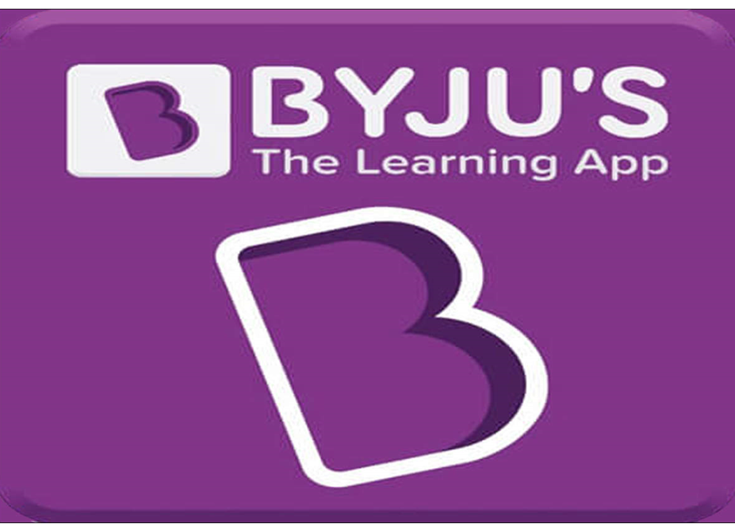

|  |
Info:
BYJU'S is an Indian multinational educational technology company, headquartered in Bangalore.
It was founded in 2011 by Byju Raveendran and Divya Gokulnath.
as of December 2021, BYJU'S is valued at US$22 billion and has over 115 million registered
students.
|
BYJU conducts around 3-4 interview rounds to finally select the candidate for a software development profile.
The shortlisted applicants must participate in a group discussion. Its goal is to assess confidence,
ability,
vocational abilities, and cognitive foresight.
HR may propose a topic of social, national, or global relevance, as well as a current event and you have
to
discuss it.
In this round, you'll be given questions regarding certain technical topics. Questions may be based on particular knowledge of the company's technical operations; comprehension of the technical work that must be done as part of the job application; or asking applicants to solve real technical problems that they would be likely to confront if hired. Some questions may look like this:
The HR interview is the final step in selecting a candidate for a job since it helps to assess an applicant's personality. Self-introduction, qualification, experience, courses taken, experience in a certain field, strengths and weaknesses, wage expectations, family, friends, and so on are examples of possible questions.
In the end, it won’t be tough to crack the interview at BYJU if you are well-prepared and in touch with your fundamental concepts. So, bring out your notes and start preparing to win the battle. Below are some tips you can incorporate to crack an interview at BYJU: